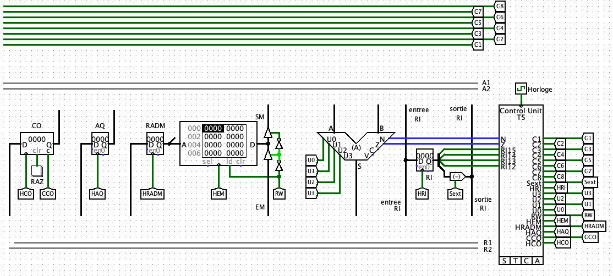
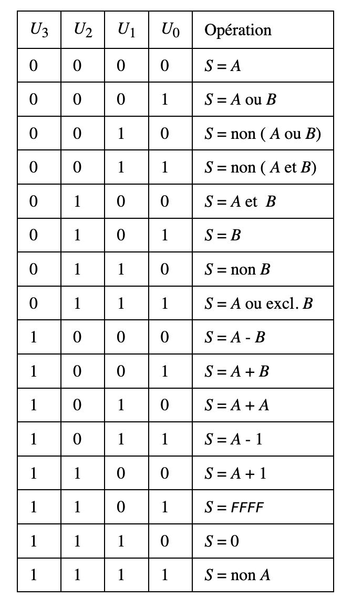

Lab session
- This Lab session will take time over three sessions of 1h30.
- Before starting this study, you must form two-person teams and work in a duo.
- You must read all the subject before starting the work.
- The mark of this work counts for 30% of the final mark only if it increases the final exam mark.
- At the end, you must provide a
name1_name2.ZIP archive file containing all files used in your work. You must upload it on EDUNOA before Monday, 12th February at 23h59 (One work uploaded by team).
- Install Java by following this tutorial
- Download Logisim available in this link
This laboratory session aims to design a simple processor using Logisim software (see below).
The objective is to create a simple 16-bit accumulator machine with the following characteristics:
- operands are 16-bit integers
- addresses are 12 bits
- the instructions are 16-bit words with three fields:

- the most significant bit (bit 15) indicates the addressing mode. Its meaning is as follows:
- 0 : Immediate (called direct for jumps): The argument is the operand.
- 1 : Indirect: The argument is the address of the address of the operand.
- bits 12 to 14 indicate the operation to be performed:
Binary code Addressing mode Description 000 LDA Store the content of the operand in the accumulator.
(immediate and indirect addressing modes)001 STA Store the contents of the accumulator in memory
(only in indirect addressing mode)010 ADD Add the operand to the contents of the accumulator and store the result in the accumulator
(immediate and indirect addressing modes)011 SUB Subtract the operand from the contents of the accumulator and store the result in the accumulator (immediate and indirect addressing modes) 100 JMP unconditional jump (only in direct addressing mode)
The address of the next instruction is in the argument.101 JEQ jump if the content of the accumulator is zero (only in direct addressing mode)
The address of the next instruction is in the argument.110 JLT jump if the content of the accumulator is strictly negative (only in direct addressing mode)
The address of the next instruction is in the argument.111 CLR putting zero in the accumulator.
(You can generate zero from the UAL and send it to the accumulator) - the least significant 12 bits contain the operation's argument (value or address).
- the most significant bit (bit 15) indicates the addressing mode. Its meaning is as follows:
- Since the CLR instruction has no argument (implicit addressing mode), only the bits 12 to 14 are decoded.
Logisim is free software suitable for simulating logic, combinatorial and sequential circuits. In particular, it lends itself well to the creation of small computers. Logisim has numerous components as standard, adding a library of components produced at CentraleSupelec called ESE1010, which notably includes an arithmetic and logic unit (UAL) and a sequencer.
The kit used for this study is a ZIP archive in which you will find, once unzipped:
- the
logisim-2.7.1.jar file, which is the Logisim simulator. - the
ese1010.jar file, which is the library of Logisim components necessary to carry out the study - the
ese1010.circ file, which contains the described computer skeleton - The test files
test_unit.mem andtest_fct.mem contain the two test programs described below and must be loaded into the memory component.

The skeleton of the computer is equipped with a clock component. To start the simulation, all you have to do is activate it in the Simulate menu. Check that:
- Simulation Enabled is checked;
- Ticks Enabled is checked;
- In Tick Frequency, choose a frequency that is not too high (e.g. 8Hz) to start.
The “top” part of the diagram includes 8 generic control signals, initially called C1 to C8 on the sequencer. You will use these signals to control controlled switches.
The “lower” part of the diagram contains control signals to the data path elements. Their meaning - which can be deduced from an examination of the diagram - is recalled below:
- HCO: clock of the ordinal counter register (CO);
- CCO: CO loading: determines what is loaded in the CO when HCO is activited: if 0, CO + 1; if 1, CO input;
- HAQ: accumulator register clock (AQ);
- HRADM: Memory Address Register Clock (RADM);
- HEM: clock of the memory input register (EM), which is loaded from the value located at the input of connector D (“from the bottom”);
- RW: positions the memory for reading (RW=1) or writing (RW=0). When reading, the value located at the address given by the RADM is available at the output on connector D (“upwards”). In writing, the value present in the EM register is written to the address given by the RADM;
- HRI: instruction register (RI) clock;
- Sext: control of the extension sign for the 12 least significant bits of the RI (argument part) to 16 bits (extension if Sext = 1).
- U0 to U3: UAL command,

- From the provided schema, determine the data path and timetable for executing all operations (and complete the microprocessor schema).
- From the obtained timetable, write signal equations to be used by the sequencer.
- Using Logisim, write the obtained equations into the sequencer components.
Two test programs are provided as files to load into the memory component.
The first (

It's up to you to determine what the second one (